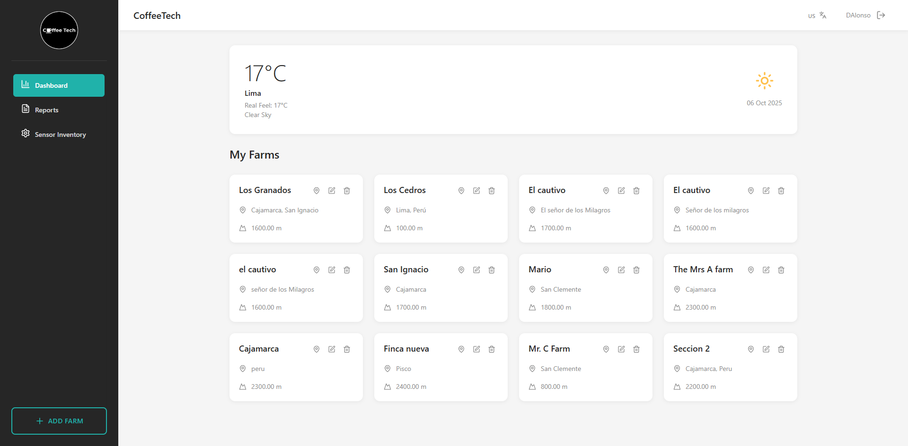
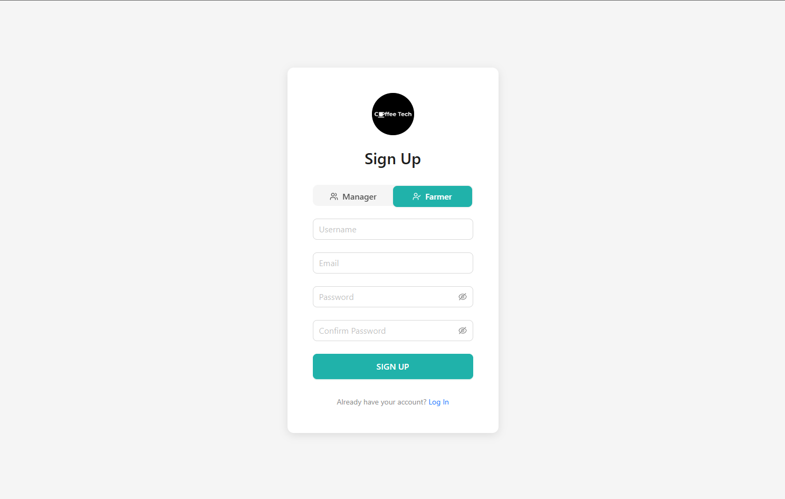
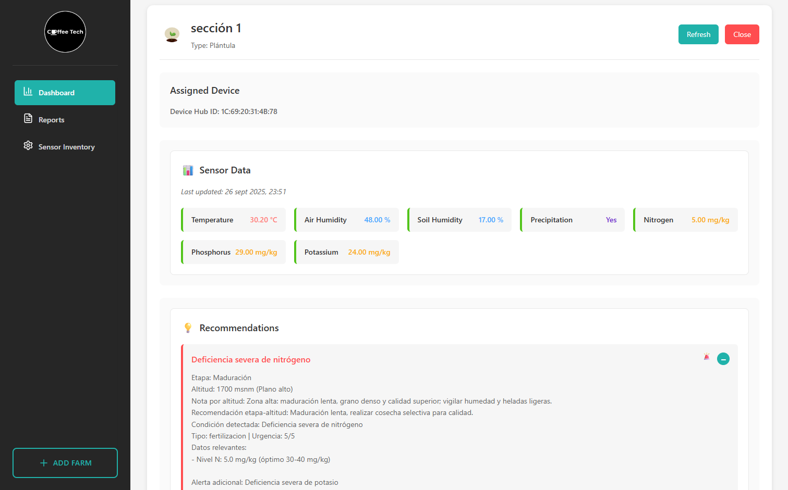
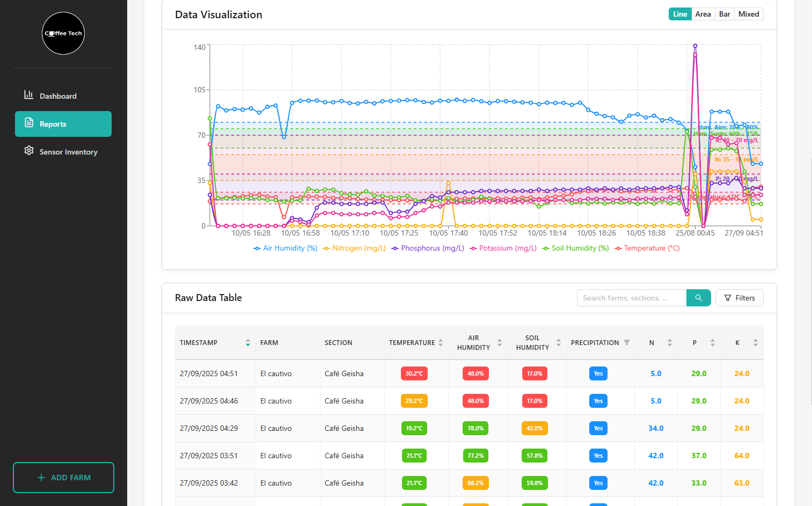

Start optimizing your coffee crops today with our web platform


Register on our web platform by selecting whether you are a cooperative or a farmer. Access from any device with a browser.

Once logged in, you will be shown quick information about the first sector with its AI-powered recommendations.

Access different sections created by the cooperative, and view real-time data and current parameters of each section with personalized recommendations.
Our platform combines cutting-edge technology with agricultural expertise to revolutionize coffee farming
Monitor soil conditions, temperature, humidity, and other critical parameters in real-time through our IoT sensors network.
Get intelligent insights and personalized recommendations based on machine learning algorithms trained on coffee agriculture data.
Make informed decisions with comprehensive analytics and predictive models to optimize your crop yield and quality.
Access your data from any device with a browser. Monitor your crops from the field or from your office.
Promote sustainable agriculture practices with optimized resource usage and environmentally friendly recommendations.
Manage multiple sectors and farmers efficiently with our cooperative-focused tools and collaborative features.